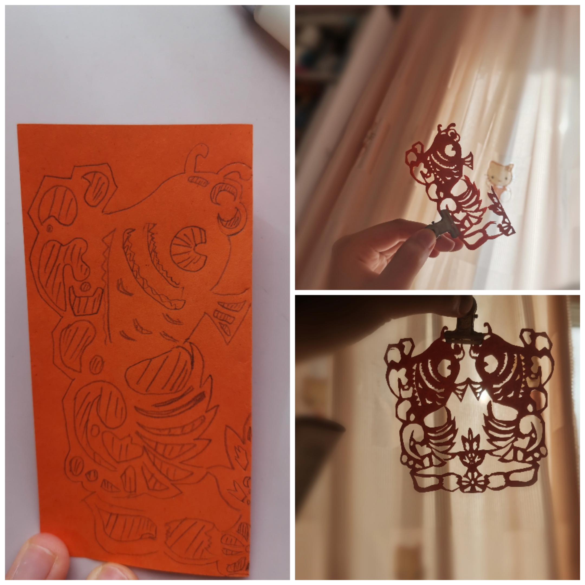
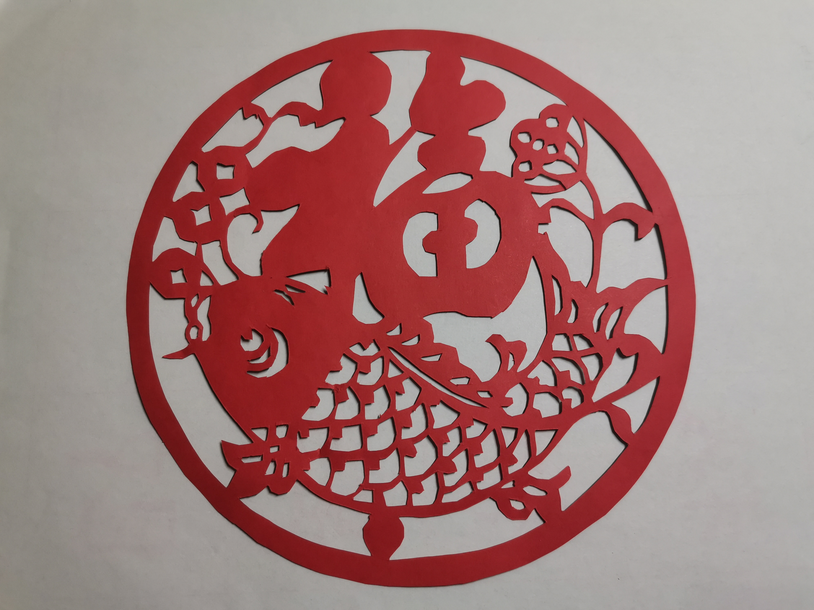
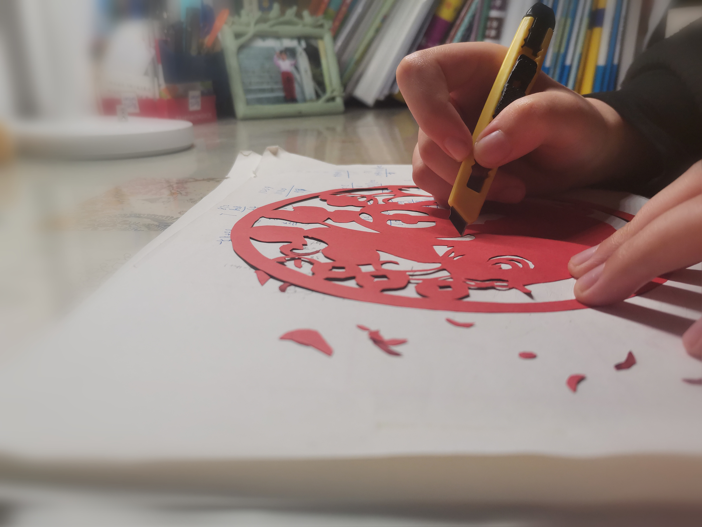

喜气迎春，福满我家 2月8日 6
张凝雪
剪纸文化是中国汉族最古老的民间艺术之一，为了增加春节参与度，自己制作窗花是一个不错的选择。窗花虽小，制作起来却不简单。它细节较多，为了有更好的效果，需要拿刻刀一点一点刻出来。从选图样、绘制，到雕刻成品，每个窗花制作都要花去一个多小时。制作结束，我不仅欣赏到了传统艺术的美丽精妙，除此之外联想到在制作窗花福字的流水线之外，还有许多传统手艺人默默坚守、传承着老手艺，不禁感到敬佩与自豪。



本博客所有文章除特别声明外，均采用 CC BY-SA 4.0 协议 ，转载请注明出处！